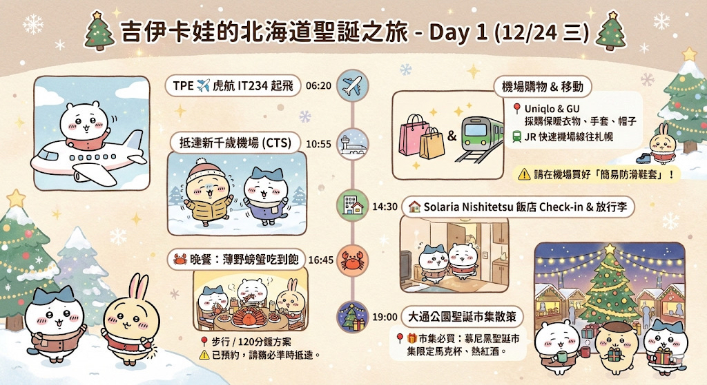
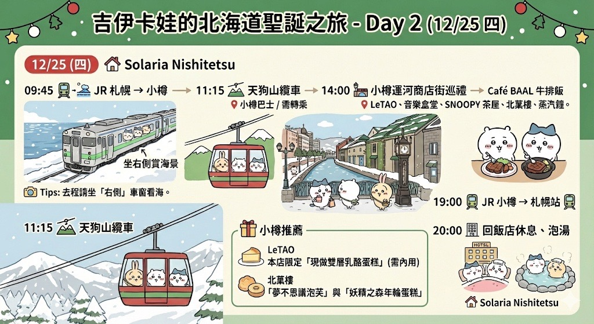
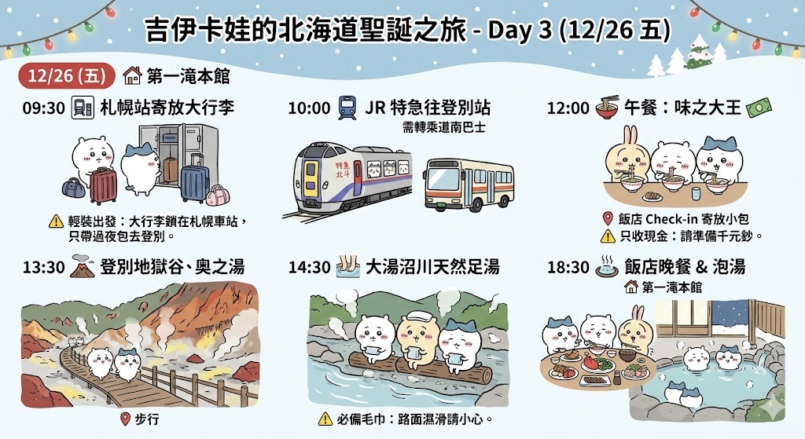
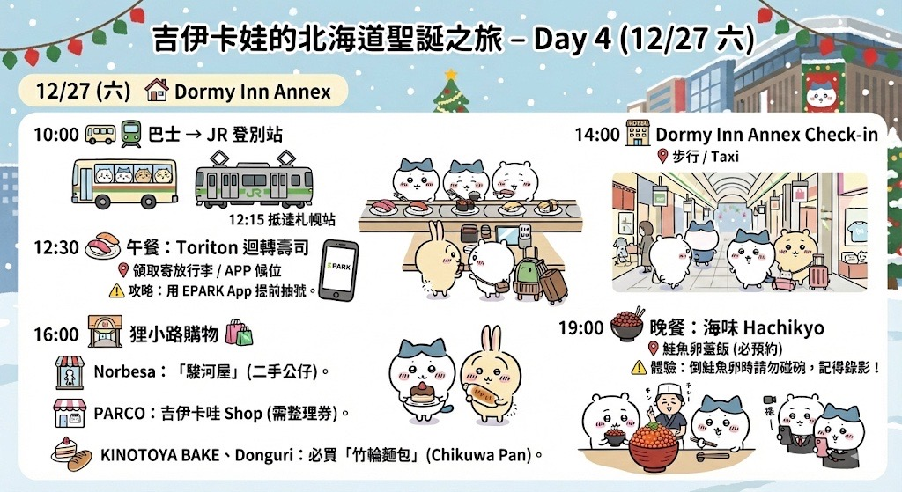
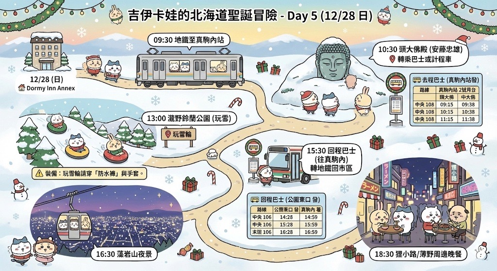
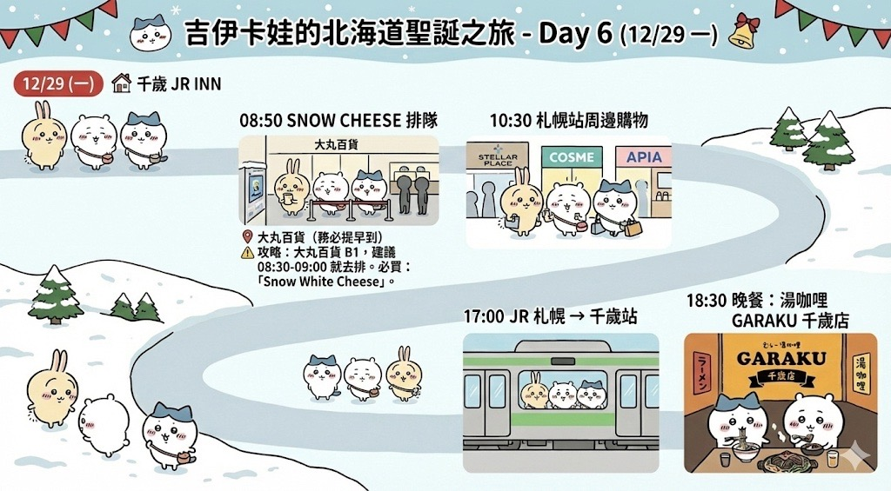
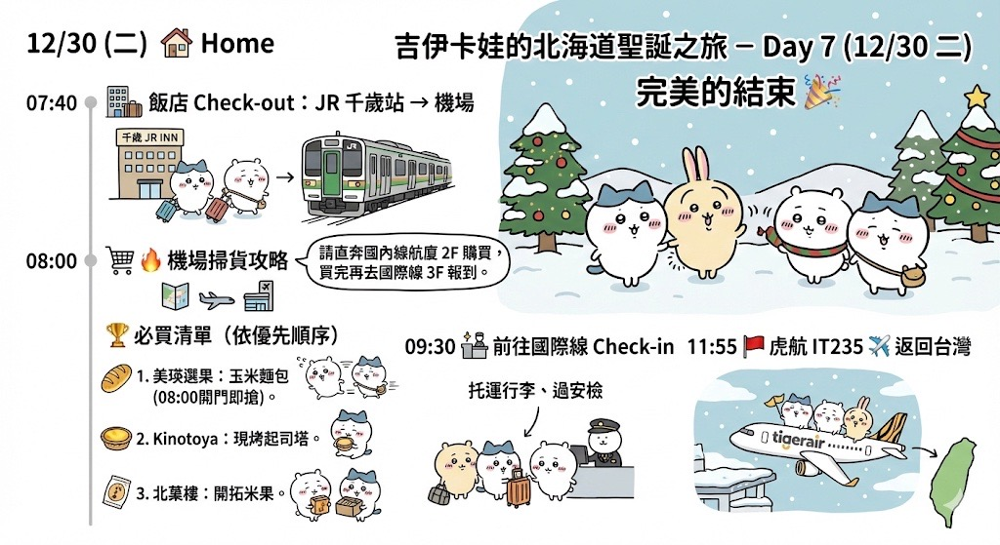
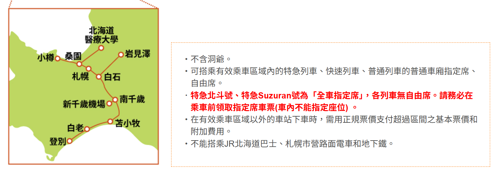

2025 北海道冬之旅 ❄️
12/24 - 12/30
🗺️ 壽司地圖
🍣 EPARK 訂位
🚄 JR 北海道
12/24 (三)
🏠 Solaria Nishitetsu

06:20
TPE ✈️ 起飛
虎航 IT234
10:55
抵達新千歲機場 (CTS)
13:00
機場購物 & 移動
📍
Uniqlo & GU 購買保暖衣物、手套、帽子。
JR 快速機場線往札幌
⚠️ 穿搭提醒
請在機場買好「簡易防滑鞋套」！
14:30
飯店 Check-in & 放行李
📍
16:45
🦀 晚餐：薄野螃蟹吃到飽
📍
步行 / 120分鐘方案
⚠️ 預約注意
已預約，請務必準時抵達。
19:00
大通公園聖誕市集散策
📍
🎁 市集必買
慕尼黑聖誕市集限定馬克杯、熱紅酒。
12/25 (四)
🏠 Solaria Nishitetsu

09:45
JR 札幌 → 小樽
坐右側賞海景
📸 Tips
去程請坐「右側」車窗看海。
11:15
天狗山纜車
📍
小樽巴士 / 需轉乘
14:00
小樽運河商店街巡禮
📍
LeTAO、音樂盒堂、SNOOPY 茶屋、北菓樓、蒸汽鐘。
🎁 小樽推薦
LeTAO：
本店限定「現做雙層乳酪蛋糕」(需內用)。
北菓樓：
「夢不思議泡芙」與「妖精之森年輪蛋糕」。
17:30
Café BAAL 牛排飯
📍
19:00
JR 小樽 → 札幌站
20:00
回飯店休息、泡湯
12/26 (五)
🏠 第一滝本館

09:30
⚠️ 札幌站寄放大行李
⚠️ 輕裝出發
大行李鎖在札幌車站，只帶過夜包去登別。
10:00
JR 特急往登別站
需轉乘道南巴士
12:00
午餐：味之大王
📍
飯店 Check-in 寄放小包
⚠️ 只收現金
請準備千元鈔。
13:30
登別地獄谷、奧之湯
📍
步行
14:30
大湯沼川天然足湯
⚠️ 必備毛巾
路面濕滑請小心。
18:30
飯店晚餐 & 泡湯
12/27 (六)
🏠 Dormy Inn Annex

10:00
巴士 → JR 登別站
12:15
抵達札幌站
12:30
午餐：Toriton 迴轉壽司
📍
領取寄放行李 / APP 候位
⚠️ 攻略
用 EPARK App 提前抽號。
14:00
Dormy Inn Annex Check-in
📍
步行 / Taxi
16:00
狸小路購物 🛍️
📍
Norbesa、PARCO 吉伊卡哇 shop、KINOTOYA BAKE、Donguri。
🎁 必逛推薦
Norbesa：
「駿河屋」(二手公仔)。
PARCO：
吉伊卡哇 Shop (需整理券)。
Donguri：
必買「竹輪麵包」(Chikuwa Pan)。
19:00
晚餐：海味 Hachikyo
📍
鮭魚卵蓋飯 (必預約)
⚠️ 體驗
倒鮭魚卵時請勿碰碗，記得錄影！
12/28 (日)
🏠 Dormy Inn Annex

09:30
地鐵至真駒內站
10:30
頭大佛殿 (安藤忠雄)
📍
轉乘巴士或計程車
🚌 去程巴士 (真駒內站發)
路線
真駒內站 2號月台
頭大佛
中央 108
09:15
09:38
中央 108
10:15
10:38
中央 108
11:15
11:38
* 冬季 [真106] 也可搭乘，但在瀧野峠下車需步行。
13:00
瀧野鈴蘭公園 (玩雪)
📍
玩雪輪
⚠️ 裝備
玩雪輪請穿「防水褲」與手套。
15:30
回程巴士 (往真駒內)
轉地鐵回市區
路線
公園東口 發
真駒內 著
中央 106
14:28
14:59
中央 106
15:28
15:59
末班 106
16:28
16:59
16:30
藻岩山夜景
📍
18:30
狸小路/薄野周邊晚餐
12/29 (一)
🏠 千歲 JR INN

08:50
SNOW CHEESE 排隊
📍
大丸百貨 (務必提早到)
🎁 攻略
大丸百貨 B1，建議 **08:30-09:00** 就去排。必買：「Snow White Cheese」。
10:30
札幌站周邊購物
Stellar Place、COSME、APIA
17:00
JR 札幌 → 千歲站
18:30
晚餐：湯咖哩 GARAKU 千歲店
📍
12/30 (二)
🏠 Home

07:40
飯店 Check-out
JR 千歲站 → 機場
08:00
🔥 機場掃貨攻略
請直奔國內線航廈 2F 購買，買完再去國際線 3F 報到。
🏆 必買清單 (依優先順序)
美瑛選果：
玉米麵包 (08:00開門即搶)。
Kinotoya：
現烤起司塔。
北菓樓：
開拓米果。
09:30
前往國際線 Check-in
托運行李、過安檢
11:55
虎航 IT235 ✈️ 返回台灣
交通攻略：JR PASS 與機場移動
🎫 札幌-登別區域鐵路周遊券
4日券

推薦原因
您的行程涵蓋機場、札幌、小樽、登別。這張「4日券」CP值最高！
適用範圍：
新千歲機場、札幌、小樽、登別。
適用車種：
特急列車 (北斗/鈴蘭)、快速機場線 (Rapid Airport)、普通列車。
座位：
可以劃位「指定席」喔！但特急北斗號和特急 Suzuran 號是全車指定席，一定要先劃位。
如何兌換 & 劃位
地點：
新千歲機場 B1「JR 外籍旅客服務處」(08:30-19:00)。
劃位：
兌換時直接請櫃檯幫忙劃好「Day 3 去登別」和「Day 4 回札幌」的特急座位。
🚌 登別溫泉交通
轉乘攻略
⚠️ Pass 不能用！(注意)
JR PASS 只能搭火車到「登別站」。 從登別站到溫泉街/第一滝本館，必須轉乘
「道南巴士 (Donan Bus)」
。
費用：
單程約 350 日圓 (請投幣或刷 IC 卡)。
時間：
約 15 分鐘。